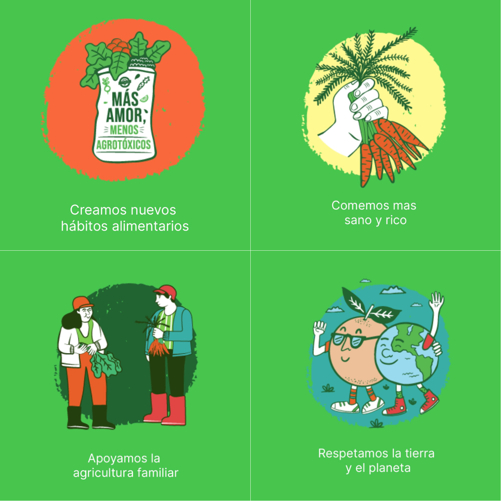

Supermercado Sustentable

Nuestra historia
Supermercado sustentable nace en 2022 en la ciudad de Olavarría a partir de un grupo de soñadores que buscaron comprometerse con la sostenibilidad ambiental y social en todas sus operaciones. Nos dedicamos a ofrecer productos frescos y alimentos de alta calidad, al mismo tiempo que promovemos prácticas responsables que benefician tanto a nuestros clientes como al planeta. Esperamos dar el ejemplo, y que se expandan los comercios sustentables.
Nuestros Pricipios
- Sostenibilidad Ambiental: Nos esforzamos por reducir nuestra huella de carbono y minimizar el impacto ambiental en todas las etapas de nuestra cadena de suministro. Esto incluye la adopción de prácticas como la reducción de plásticos de un solo uso, el uso de energías renovables, y la promoción de productos locales y de temporada.
- Productos Responsables: Seleccionamos cuidadosamente nuestros productos para garantizar que cumplan con altos estándares de sostenibilidad y ética. Preferimos productos orgánicos y libres de pesticidas, y promovemos la agricultura regenerativa y métodos de producción que respeten los derechos de los trabajadores y los animales.
- Educación y Conciencia: Creemos en educar a nuestros clientes sobre la importancia de las decisiones de consumo consciente. Ofrecemos información transparente sobre el origen y las prácticas detrás de cada producto, para que puedan tomar decisiones informadas y responsables.
- Innovación Continua: Estamos siempre en búsqueda de nuevas formas de mejorar y adaptarnos, utilizando tecnologías y prácticas innovadoras que permitan un impacto positivo en el medio ambiente y en la experiencia del cliente.
Creemos que cada compra puede hacer una diferencia. Nuestro compromiso con la sostenibilidad y la responsabilidad social nos guía en nuestro objetivo de ofrecer una experiencia de compra que no solo satisfaga las necesidades de hoy, sino que también proteja y preserve el mañana para las generaciones futuras.
